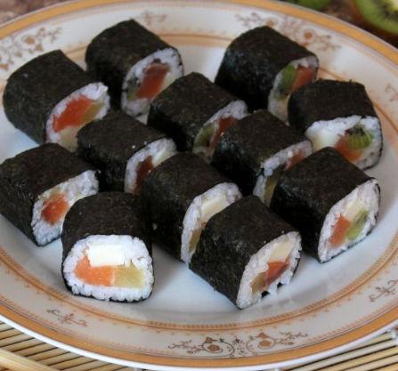

| Су́ши, или су́си[1] (яп. すし, 寿司, 鮨, 鮓, вар. 寿し суси, [sɯɕi]; несклоняемое[1]), — блюдо традиционной японской кухни, приготовленное из риса с уксусной приправой и различных морепродуктов, а также других ингредиентов. С начала 1980-х годов суши получило широкую популярность на Западе и во всём мире. | ||
| В словарях встречаются два варианта названия блюда — «суши» и «суси»[2]. На сегодня более распространено в русском языке написание и произношение — «суши» |  | появившееся при посредстве английского языка, которое, однако, может вызывать резкое отторжение у японистов[4][5][6], предпочитающих вариант «суси» в соответствии с правилами японско-русской транскрипционной системы Поливанова. |
| Бо́льшую популярность варианта «суши» можно объяснить тем, что мода на это блюдо пришла в Россию с Запада (англ. sushi), а не из Японии. | ||